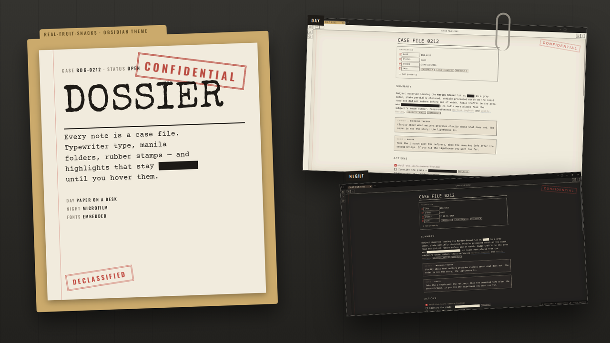
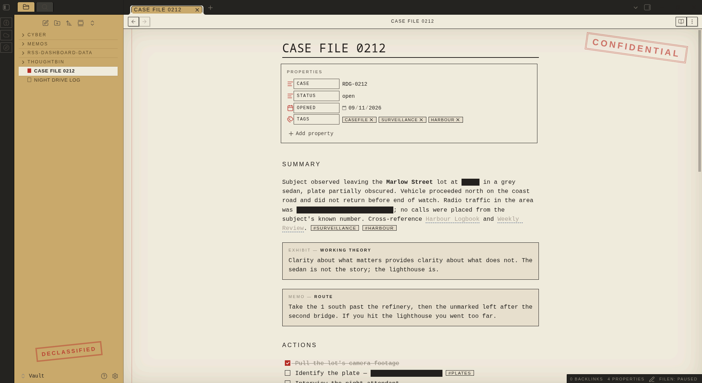
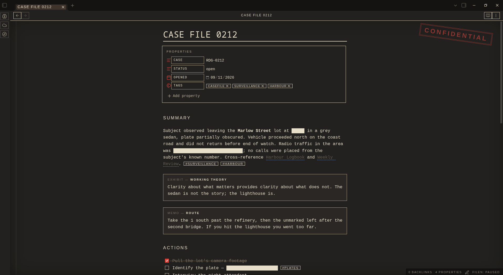

Manila folders, typewriter type, a red margin, rubber stamps — and one trick: your highlights stay redacted until you hover them.

Obsidian's own components, dressed as a file that's been through a few hands.
Write ==like this== and it renders as a black bar until you hover it. Spoilers, answers, passwords, punchlines — hidden in plain sight. In the editor, the line you're on reveals itself.
Special Elite titles, Courier Prime body, Oswald labels. All embedded, nothing to install.
Manila tabs and file explorer, a DECLASSIFIED stamp at the bottom, a CONFIDENTIAL stamp on every note.
Callouts are labelled by type — EXHIBIT, MEMO, NOTICE with an URGENT sticker, QUERY, STATEMENT, CLOSED.
Red margin rule, dashed transcript code blocks, stamped tags, red-filled checkboxes, dashed-rule menus.
Day is paper on a desk. Night is microfilm: dark paper, cream ink, cream redaction bars.
Readable line length on — the stamp and margin sit around a centred page.


From the community list, or two files by hand.
theme.css and manifest.json from the latest release into .obsidian/themes/Dossier/, then pick it under Appearance.==, switch to Reading view, and hover the bar..obsidian/
themes/
Dossier/
theme.css
manifest.jsonPaper, folder, ink, and one red.
| Role | Day | Night |
|---|---|---|
| Paper | #F1EBDD | #1E1C19 |
| Folder | #CBAA6C | #3B3128 |
| Ink | #1E1B17 | #E8DFCB |
| Red | #B7281F | #D9433A |
| Blue | #1F3F73 | #86A9DC |
| Reveal | #F6E27A | #B89E3A |
Same site, a different glow per project.